Abbildungen zu den §§ 11 bis 16
Zu § 11
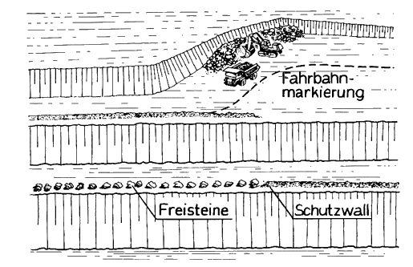
Bild 1: Fördersohlen und Fahrstraßen bei gleisloser Förderung
Zu § 12 Abs. 5
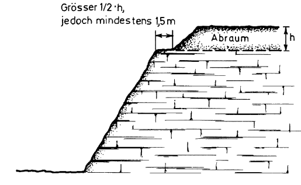
Bild 2: Schutzstreifen bei Abraumbeseitigung von Hand
Zu § 12 Abs. 6
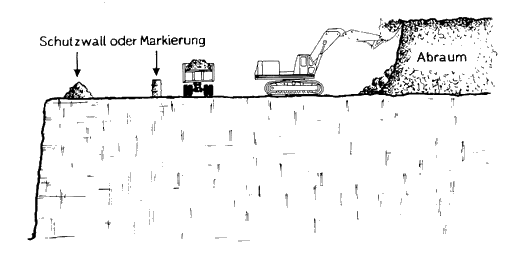
Bild 3: Schutzstreifen bei maschineller Abraumbeseitigung im Hochschnitt
Zu § 13 Abs. 1 und § 14 Abs. 1
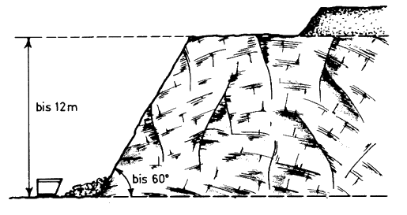
Bild 4: Wegladen von Hand
Zu § 13 Abs. 2 und § 14 Abs. 3
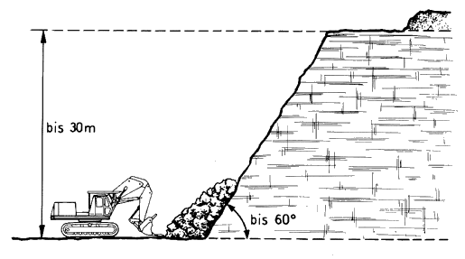
Bild 5: Maschinelles Wegladen
Zu § 14 Abs. 4
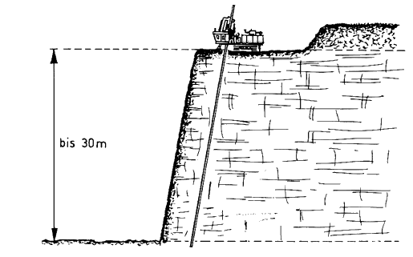
Bild 6: Großbohrlochsprengverfahren
Zu § 14 Abs. 4
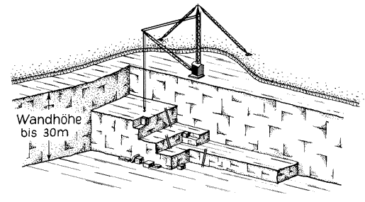
Bild 7: Gewinnung von Werkstein
Zu § 15 Abs. 2 und § 16 Abs. 2
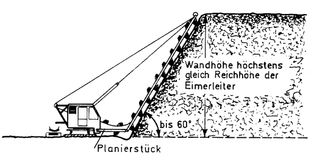
Bild 8: Gewinnung mit Eimerkettenbagger im Hochschnitt
Zu § 15 Abs. 2
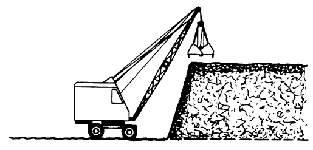
Bild 9: Gewinnung mit Greifbagger im Hochschnitt
Zu § 15 Abs. 2
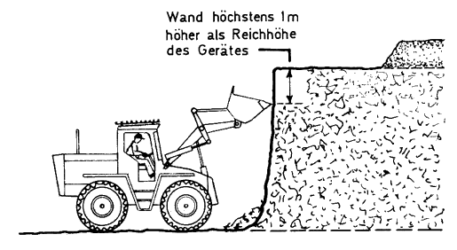
Bild 10: Gewinnung mit Schaufellader
Zu § 15 Abs. 2
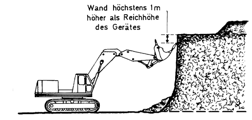
Bild 11: Gewinnung mit Hochlöffelbagger
Zu § 16 Abs. 3
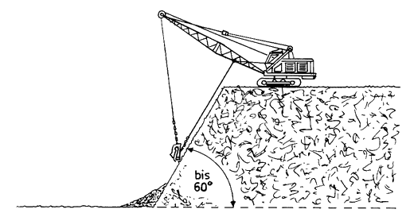
Bild 12: Gewinnung im Tiefschnitt